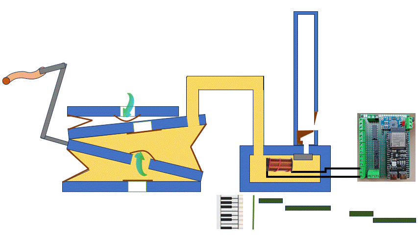
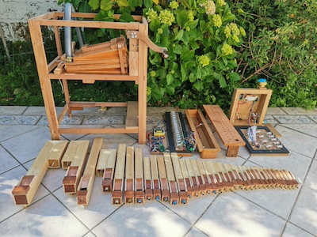
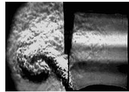
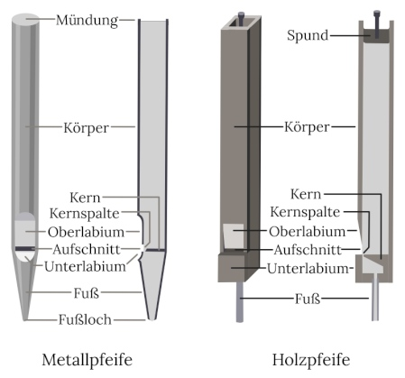
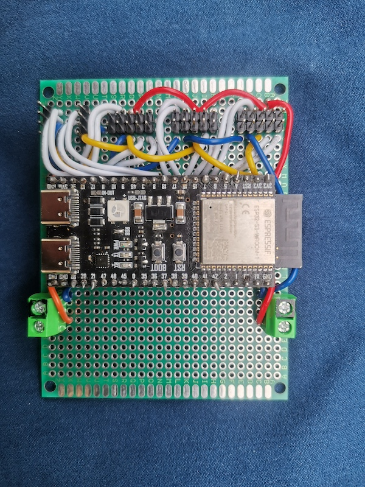
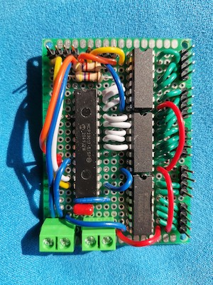

The bellows produces a continuous flow of air at constant pressure, which reaches the bases of the pipes. Each pipe corresponds to a musical note. At the base of each pipe is an electromagnetic valve. When the valve opens, that note sounds.
The music is stored as files in a microcontroller, which controls the valves. These files are in MIDI format, meaning they contain instructions for the exact moment each valve must open and close to sound the corresponding note.
The Parts of the Crank Organ

First row, from left to right:
- Bass pipes: Three pipes are bent (mitred) because they are very long.
- Accompaniment pipes
- Melody pipes
Second row, from left to right:
- The frame with the bellows and its connecting tube
- The microcontroller, equipped with a battery and voltage converters
- The chest for accompaniment and melody pipes
- The chest for bass pipes
The crank organ has 47 pipes ranging from B-flat 2 to E-flat 7, covering 3 and a half octaves. Starting from C4, the scale is chromatic; below C4 are the bass notes, which for size reasons skip certain notes, making E-flat the organ’s preferred tonal center.
The Pipes

This is a pipe, not yet finished. On the left, you can see the air inlet tube leading to the foot chamber. The chamber cap is held with an elastic band to allow adjustments, as is the bevelled lip, which can still be tuned. Sound is produced at the mouth (labium window) when the airflow strikes the bevelled lip. On the right, the stopper protrudes, which regulates the tuning of the pipe.

Image source: orgue-bernard.blog4ever.com
Air enters the pipe from the bottom into a small chamber with a flat slit-shaped opening approximately half a millimeter wide. An airflow is directed toward the pipe's languid, colliding head-on with the bevelled upper lip. The air then begins to oscillate at a frequency that depends on the length of the pipe. This oscillation generates the pipe's sound.

Image source: bach.de
The pipes in this crank organ are of the "stopped" type (known as gedackte Holzpfeifen in organ builder jargon). There is a centuries-old history of perfecting this design, refining dimensions such as the ratio of height to width and scaling progressions, as these pipes are very common in organs. Most technical descriptions are available in German, French, and English.
Each pipe consists of 15 custom-built pieces made to unique dimensions, plus a bolt, screw, and washers:
- Foot Pipe: A tube at the foot of the pipe to insert into its base and allow air entry. The diameter increases with the size of the pipe.
- The Core/Block: Forms the air chamber inside the pipe foot.
- Metal Inlet Tube: Allows air to enter the foot of the pipe.
- Front Cap: Air escapes between the core and front cap to strike the lip.
- Gasket: Made of paperboard to set the exact thickness of the air escape gap.
- Bevelled Upper Lip: The airflow strikes this lip to produce sound. It must not be razor-sharp, but properly rounded.
- Pipe Walls: The four side walls. In this case, they are made of balsa wood thoroughly sealed with at least four coats of polyurethane varnish.
- Ears: Small wooden side projections at the mouth opening that direct and improve the acoustic output.
- Stopper: Features a silicone core molded to the exact internal shape of the pipe, sandwiched between two sound-reflecting wooden blocks, held together by a bolt and nut to compress the silicone and seal the top opening.
- Decorative Top: Final ornamental top plug (yet to be attached).
For 34 pipes, that totals 408 custom-crafted individual pieces!
The Bellows
The bellows system consists of a central reservoir storing a couple of liters of compressed air, and two feeder bellows that draw in outside air and push it into the reservoir. Air is pumped continuously on both the upstroke and downstroke. The bellows use leather flap valves to prevent air backflow.

Underneath, a heavy spring supplies constant air pressure:

At the top of the bellows is a relief/escape valve that regulates the air pressure to roughly 8 cm water column. When the bellows rise too high, a cord pulls the valve lever, allowing excess air to escape and maintaining near-constant pressure.

The bellows are crafted from sheepskin leather internally reinforced with cardstock—a combination that is both durable and airtight.
The Music
There are currently around 160 melodies stored in the organ. Traditional vintage organs held a maximum of 8 melodies, each lasting about a minute and a half. With the MIDI format used by this organ, those length and storage restrictions no longer apply.
Melodies must be adapted specifically for this organ: they must fit the exact scale and notes available. Additionally, counterpoint lines, scale runs, trills, and call-and-response figures are frequently added. Traditional crank organ arrangements typically combine melody, ornamentation, counterpoint, responses, chords, and bass lines to maximize the pipes' expressiveness.
Music is usually edited in a "piano roll" view. Each row represents a musical pitch, colors denote registers/sections, and blank rows indicate pitches that do not have a physical pipe on the instrument.

Electronics & Software
The electronics and software were custom built from scratch for this instrument.
Here is the main microcontroller board:

The output pins of the microcontroller cannot supply enough current to directly drive the solenoid valves. Therefore, each pipe chest includes a 16-channel driver board equipped with current amplifiers.
Here is one of the driver boards:

Software Capabilities:
- Plays MIDI files as timed triggers opening and closing pipe valves.
- Features a web-based user interface accessible over Wi-Fi. A smartphone web browser connects directly to a micro web server running on the ESP32-S3.
- Stores metadata for each song, including composer, year, genre, and custom notes.
- Supports setlists for sequential playback or manual song selection.
- Includes an integrated pipe tuner to quickly test single pipes and verify pitch alignment.
- Manages battery consumption, auto-powers down during inactivity, and monitors real-time battery status.
- Logs playback history for performed songs.
- Processes input from a hidden capacitive touch button.
- Supports 3 Wi-Fi connection modes with smartphones, and operates completely offline if no network is available.
- Includes a cloud server component allowing spectators to scan location-specific QR codes, browse the song list, submit requests, and see upcoming tracks synced live with the organ.
- Offers full configuration menus for note mapping, valve pin assignments, Wi-Fi SSID settings, and more.
The firmware is written in MicroPython (a optimized Python 3 runtime for microcontrollers), combined with an HTML5/CSS/JSON and JavaScript REST API frontend. The microcontroller codebase consists of ~6,500 lines of Python across 24 concurrent processes, along with 12 web application pages.
History
Crank organs originated in the 18th century and became iconic worldwide as street performance instruments.
Before the advent of radio broadcasting, street organs were one of the few ways people could listen to recorded or automated music outdoors. In Argentina, for instance, early tangos gained widespread popularity primarily through street organ performances.
With the rise of radio and modern recording technology, traditional street organs nearly vanished. Most vintage organs found in Chile were imported from Germany during the early 20th century. Today, commercial organ production has virtually ceased, making modern organ building a craft practiced almost exclusively by hand by independent artisans.